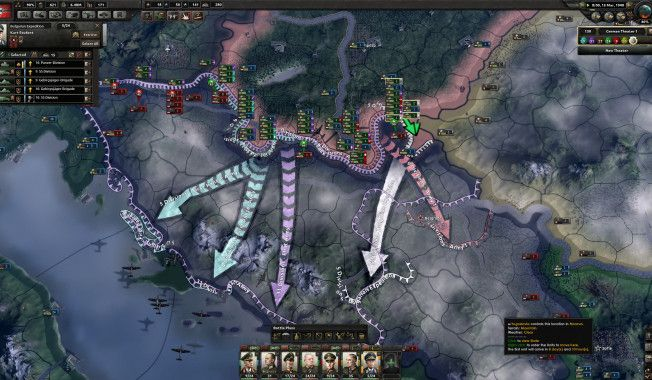

Гайд по шаблонам сухопутных войск в Hearts of Iron 4
Tell me what template for the USSR? And what is needed for the Reich? Guys, what is the top template now?
Templates,
templates,
templates… This topic has long been ripe for the people. From the very beginning of the game to the moment of
implementation. It seems to be a game already
several years after it came out, but a well-established pattern never formed. Yes, you can remember about 7/2,
but he
was
good only in the version for patients with diseases, and in patch 1.7.1 it is completely unprofitable. Let's
try to
figure it out today
why and what kind of template do we need.

Лучшие шаблоны в Hearts of Iron 4
Что собой представляет шаблон дивизии?
Как говорилось в предыдущей части шаблон — это роты поддержки и батальоны разных войск, из которых состоит ваша
дивизия, то что и определяет ее силу в итоге. Сам по себе он выглядит в игре, как прямоугольник размером 5х5, в
который помещается 25 батальонов. В левой части есть место из 5 ячеек для рот поддержки и артиллерии. Это дело
разработчики обозвали конструктором дивизий. В нем вы можете: редактировать шаблон за очки опыта армии, который
берется от сражений и муштры армии; менять название дивизий и их тип; выбирать приоритет пополнения; назначать
техническое оснащение конкретной дивизии.

Параметры шаблона
С общими чертами разобрались, теперь перейдем к самому вкусному. Справа в окне виды различные числа, их так
много, что можно легко запутаться новичку (по крайней мере у меня возникал вопрос, когда я только начинал). В
действительности самыми важными являются лишь несколько из них, которые и определяют силу вашей дивизии в бою.
Прошу заметить, что некоторые параметры имеют усредненное значение (соотношение количества батальонов с таким
параметром к общему числу батальонов в шаблоне). Что это значит? Это значит, что хоть в исследованиях будет
написано 150 брони у танка, но на деле может оказаться 20 брони у танковой дивизии, если вы поставите лишь 1
батальон танков на 10 пехотных. Это такой своеобразный баланс у разработчиков, в дальнейшем будем помечать
усредненные параметры +.